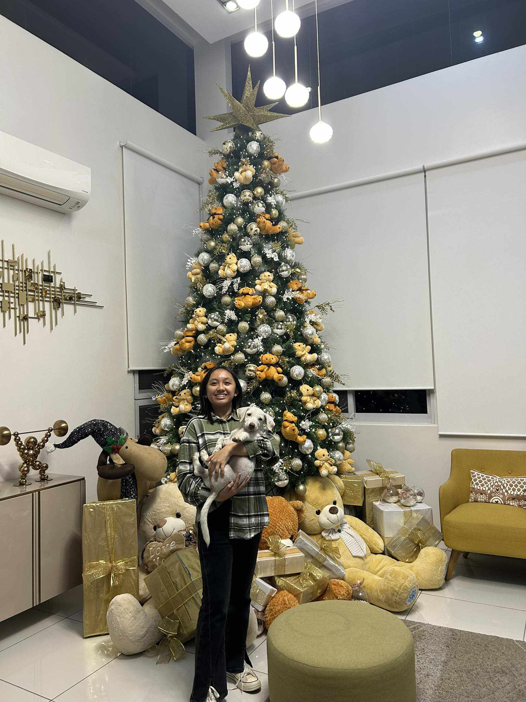

Great Works Made by Great Students
Notable Works
Be Part of the family here in Dimistus Whiz Academy!

Poets
LARA VENISSE D.C ANDRES
9 Pinatubo
With love being their theme, she translated Ruth B's song Dandelions to a Petrarchan sonnet and
the famous song Losin' Control by Russ to a Shakespearean sonnet.

MIKHAILA YVANNA L. BAUTISTA
9 Pinatubo
With love being their theme, she translated Rebbeca Sugar's song Love Like You to a Petrarchan sonnet and
the famous song Line Without a Hook by Ricky Montgomery to a Shakespearean sonnet.

ALYSSANDRA D. VINLUAN
9 Pinatubo
With love being their theme, she translated Unique Salonga's song Panahon to a Petrarchan sonnet and
Zild's famous song Ibang Planeta to a Shakespearean sonnet.
Petrarchan Sonnets
Hope for Love Amidst Dandelions
This sonnet is a passionate tribute to a remarkable love that describes the lover as a captivating presence amid life's excitement. It communicates a desire to join hearts in a calm and enduring link through vivid imagery of dandelions and the desire for eternal relationships.
Change for You
This sonnet compares oneself to a moth who aspires to be a butterfly, symbolizing feelings of inadequacy and a desire for change to equal the perceived beauty and elegance of another. It questions the depth of feelings from someone seemingly pure and lovely, while grappling with the uncertainty of self-worth and desire for metamorphosis.
If you knew who I really am Would you still want me back or leave me to rot? I will do everything, starting from how I should act to how should I not. I would go beyond on what I believe I am. Change who I am, look pass my sham All of these, just to become a butterfly like you, that I wished to be an awful lot. Why do you think of me as that of lovely, when I truly am not? Will you not push me away and tell me to scram? It has come to me that I am awful as I can be. You are a butterfly and I am just a mere moth on a wall. I am a pest when compared to you. How I wish to know why you love me How can you be so special and love everyone and all? How will I push through just to be someone like you?
Lost Paintings
This sonnet expresses regret and longing for a relationship that faded from a once-vibrant bond. It captures the bittersweet realization that a love that had faded into memories tinged with regret and the weight of spent time had vanished. It reflects on lost opportunities and the progressive dimming of shared experiences.
In the dance of our relationship, the melody shifted How can I come back now that I long for your embrace? What we shared, once aflame, has faded and is now a faint trace I stood silent, not once were my lips lifted Once a blank canvas, opportunities were then painted Far into the unknown, in their absence, I discovered a hollow space Time and opportunities, both a cherished lace After hours had passed, I realized that time had drifted Our light had turned dim, we started to diminish The flickering flame had now been put out The vivid memories we made were left to vanish Past is past, what we had, we can only dream about Opportunities thrown to waste, a route that leads us both to banish Wasting time, feels like a journey astray, leading to the wrong route.
Shakespearean Sonnets
Haunted Heart
This sonnet illustrates the leading lady's difficulty in trusting again despite the attraction of a new love, depicting the haunting aftermath of earlier heartbreak. It explores the intricacies of emotional wounds and the difficulties of accepting love when plagued by the fear of experiencing the same suffering again.
In descents of love, she fears no grasp will save her, As past romance shattered her to a state, Daily accusations, left her in a maze, thoughts blurred. Her calls ignored, his presence is a destined fate. Should have ceased early, before it truly start, In love’s pursuit, she gained bitter stings. Broken trust, heart betrayed, soul torn apart, Alone she stands, with burdens that cling. Burdened alone, she starts anew, Loads heavy, it weighs her down, The new suitor’s love, purest and true, Falls once more, her trust, a fragile crown. In love’s embrace, she found a new role, Struggles, fear of loss, her heart still cannot control.
Dog Without a Leash
This sonnet expresses regret for falling short of the beloved's expectations and laments the realization of a one-sided affection. It portrays a sincere dedication to personal development and a quest to become worthy of the admired person's devotion, as well as a genuine desire to make up for previous mistakes and establish one's worthiness.
I assumed there was something between us. Later, I realized there was no connection. Look at you now, a lady so perfect and noble, like I never was. Contrary to you, I am just an immature lad that cannot do motion nor simple action. Stay right beside me, that is my one and only wish. I am nothing without you, would you please hold me near? I am not worthy of you nor your tears, me, a mere dog without a leash. I swore to do anything and humble myself for you, my dear. Was there a word I uttered that made your heart shatter rather than give you laughter? How I wish to go back in time to mend this wound. I will do anything for that matter, to bring you relief with sweet water. I want to do what I can for you or else my world would be doomed. You are a mature and capable woman even when alone, while I am just here like a shadow on the backside wall. Even so, I shall do everything in my capabilities to be of worthy of you, no matter how big or small.
Another Planet
This sonnet expresses intense admiration for someone whose unique smile and unparalleled presence inspire a strong sense of devotion and longing. It portrays an unearthly connection that surpasses everyday events and leaves the speaker speechless in the captivating atmosphere of their beloved, perfectly capturing their amazement.